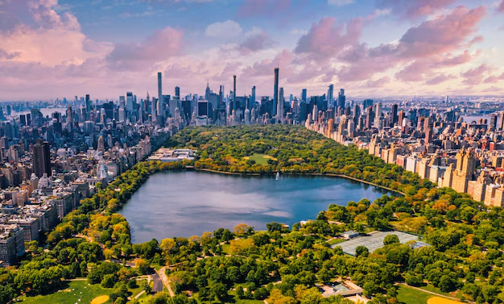

Welcome to Manhattan
Manhattan is the most densely populated of the five boroughs of New York City. The borough is coterminous with New York County, an original county of the U.S. state of New York. The borough mostly consists of Manhattan Island, bounded by the East, Hudson and Harlem Rivers, but also includes several small adjacent islands and a small area on the mainland. Manhattan has been described as the economic and cultural center of the United States and is home to the United Nations Headquarters. Wall Street in Lower Manhattan is one of the financial capitals of the world, has an estimated GDP of over $1.2 trillion, and is home of both the New York Stock Exchange and NASDAQ. Manhattan's real estate market is among the most expensive in the world, and many multinational media conglomerates are based in the borough.
New York County is the most densely populated county in the United States, denser than any individual American city. It is one of the most densely populated areas in the world, with a 2010 population of 1,585,873 living in a land area of 22.96 square miles (59.5 km2), or about 69,071 residents per square mile (26,668/km²). It is also one of the wealthiest counties in the United States, with a 2005 per capita income above $100,000. Manhattan is the third-largest of New York's five boroughs in population, after Brooklyn and Queens, and it is the smallest borough in land area.
Many districts and landmarks in Manhattan have become well known to New York City's approximately 50 million annual visitors. Times Square, iconified as "The Crossroads of the World" and "The Center of the Universe", is the brightly illuminated hub of the Broadway theatre district, one of the world's busiest pedestrian intersections, and a major center of the world's entertainment industry. The borough hosts many world-renowned bridges, skyscrapers, and parks. Manhattan's Chinatown incorporates the highest concentration of Chinese people in the Western Hemisphere. The Stonewall Inn in Greenwich Village served as the catalyst for the modern gay rights movement. Numerous colleges and universities are located in Manhattan, including Columbia University, New York University, and Rockefeller University, which have been ranked among the top 50 in the world. The city of New York was founded at the southern tip of Manhattan, and the borough houses New York City Hall, the seat of city government.
The name Manhattan derives from the word Manna-hata, as written in the 1609 logbook of Robert Juet, an officer on Henry Hudson's yacht Halve Maen (Half Moon). A 1610 map depicts the name as Manna-hata, twice, on both the west and east sides of the Mauritius River (later named the Hudson River). The word "Manhattan" has been translated as "island of many hills" from the Lenape language.